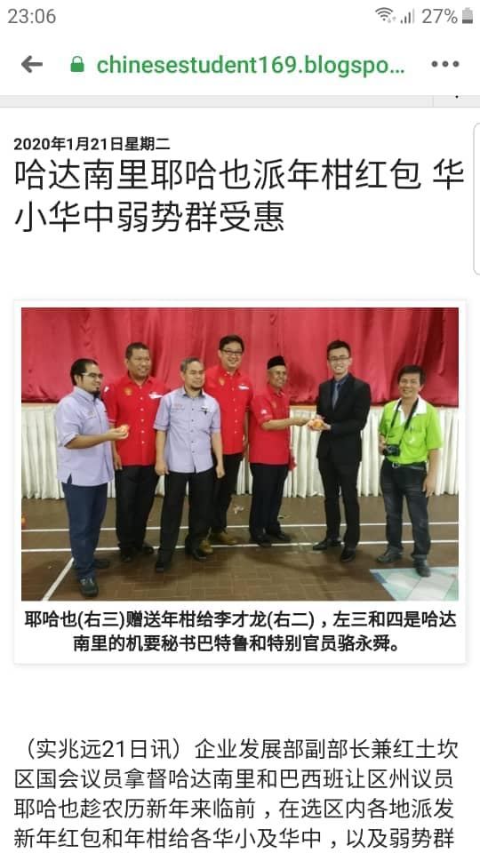
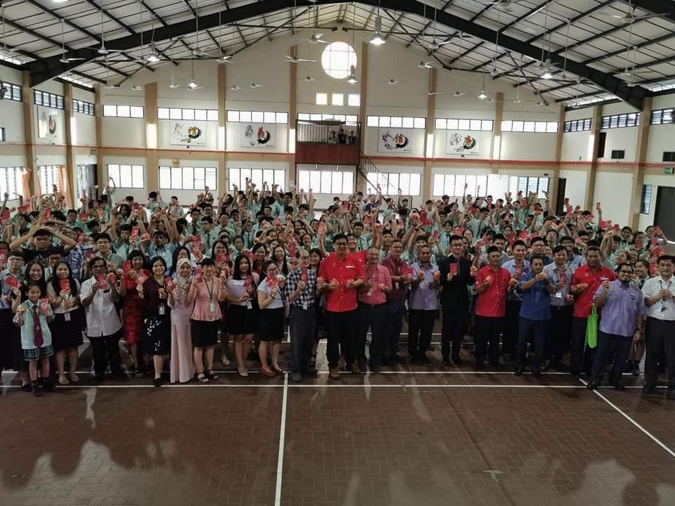
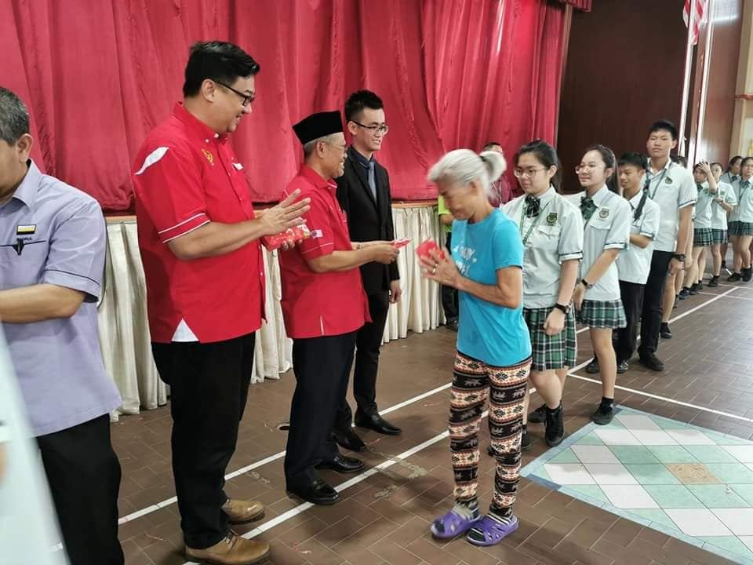
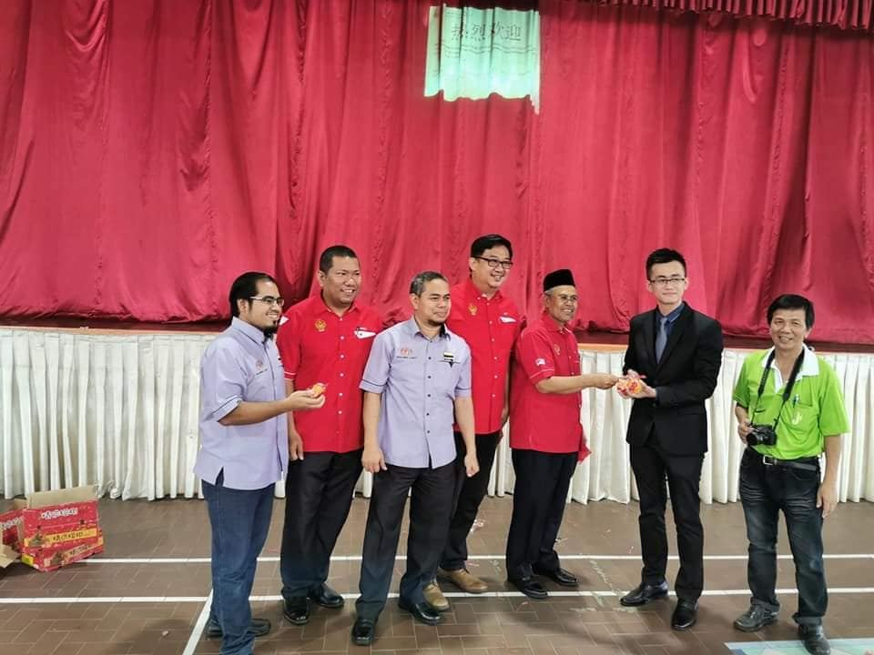

企业发展部副部长兼红土坎区国会议员拿督哈达南里和巴西班让区州议员耶哈也趁农历新年
企业发展部副部长兼红土坎区国会议员拿督哈达南里和巴西班让区州议员耶哈也趁农历新年来临前，前往南华独中派发新年红包和年柑，以营造新年的欢乐气氛。https://chinesestudent169.blogspot.com/2020/01/blog-post_48.html?m=1




企业发展部副部长兼红土坎区国会议员拿督哈达南里和巴西班让区州议员耶哈也趁农历新年来临前，前往南华独中派发新年红包和年柑，以营造新年的欢乐气氛。https://chinesestudent169.blogspot.com/2020/01/blog-post_48.html?m=1



